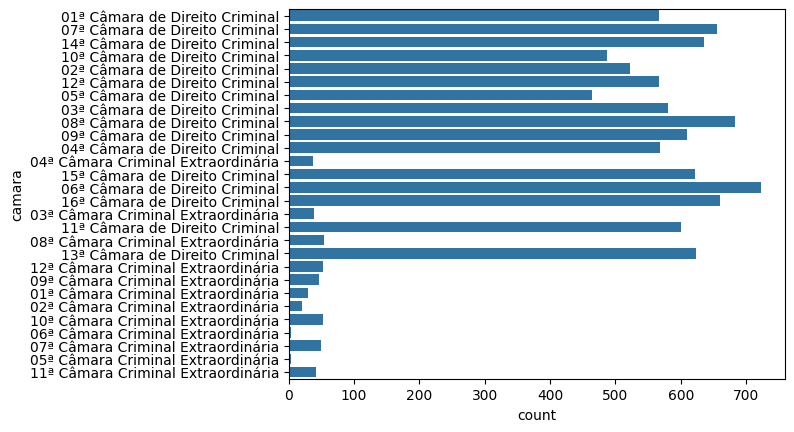

import pandas as pd
import seaborn as sns2 Tipos de variáveis
camaras = pd.read_csv('https://github.com/jtrecenti/main-cdad2/releases/download/data/camaras.csv')camaras.info()<class 'pandas.core.frame.DataFrame'>
RangeIndex: 10000 entries, 0 to 9999
Data columns (total 18 columns):
# Column Non-Null Count Dtype
--- ------ -------------- -----
0 processo 10000 non-null object
1 assunto 10000 non-null object
2 camara 10000 non-null object
3 relator 10000 non-null object
4 origem 10000 non-null object
5 comarca 10000 non-null object
6 polo_mp 10000 non-null object
7 decisao 10000 non-null object
8 unanimidade 10000 non-null object
9 dt_publicacao 9999 non-null object
10 ementa 10000 non-null object
11 tempo 9999 non-null float64
12 rel_idade 8609 non-null float64
13 rel_id_municipio_nasc 8681 non-null float64
14 rel_faculdade_direito 8686 non-null object
15 rel_tempo_magistratura 7267 non-null float64
16 rel_tipo_magistrado 10000 non-null object
17 rel_quinto 8686 non-null object
dtypes: float64(4), object(14)
memory usage: 1.4+ MBcamaras.relator.head(30)0 MÁRIO DEVIENNE FERRAZ
1 ALBERTO ANDERSON FILHO
2 FERNANDO TORRES GARCIA
3 NELSON FONSECA JÚNIOR
4 ALEX ZILENOVSKI
5 PAULO ROSSI
6 DAMIÃO COGAN
7 CÉSAR AUGUSTO ANDRADE DE CASTRO
8 IVO DE ALMEIDA
9 SÉRGIO RIBAS
10 NELSON FONSECA JÚNIOR
11 ALCIDES MALOSSI JUNIOR
12 IVANA DAVID
13 ALEXANDRE ALMEIDA
14 JUSCELINO BATISTA
15 JOSÉ VITOR TEIXEIRA DE FREITAS
16 WALTER DA SILVA
17 PAULO ROSSI
18 LUIZ FERNANDO VAGGIONE
19 WILLIAN CAMPOS
20 FÁTIMA GOMES
21 NUEVO CAMPOS
22 MIGUEL MARQUES E SILVA
23 MENS DE MELLO
24 HERMANN HERSCHANDER
25 ELY AMIOKA
26 AMABLE LOPEZ SOTO
27 HEITOR DONIZETE DE OLIVEIRA
28 ZORZI ROCHA
29 GUILHERME DE SOUZA NUCCI
Name: relator, dtype: objectcamaras.value_counts('relator')relator
MENS DE MELLO 163
CAMILO LÉLLIS 151
MARCOS CORREA 150
GILBERTO CRUZ 147
IVANA DAVID 144
...
ERIKA SOARES DE AZEVEDO MASCARENHAS 8
CHRISTIANO JORGE 8
KENARIK BOUJIKIAN 5
LUÍS GERALDO LANFREDI 3
NOGUEIRA NASCIMENTO 1
Name: count, Length: 133, dtype: int64Note que temos câmaras ordinárias e extraordinárias. O que são as câmaras extraordinárias? Elas ainda existem?
sns.countplot(data=camaras, y='camara')
camaras.value_counts('camara', normalize=True)camara
06ª Câmara de Direito Criminal 0.0723
08ª Câmara de Direito Criminal 0.0683
16ª Câmara de Direito Criminal 0.0660
07ª Câmara de Direito Criminal 0.0655
14ª Câmara de Direito Criminal 0.0636
13ª Câmara de Direito Criminal 0.0624
15ª Câmara de Direito Criminal 0.0621
09ª Câmara de Direito Criminal 0.0610
11ª Câmara de Direito Criminal 0.0601
03ª Câmara de Direito Criminal 0.0581
04ª Câmara de Direito Criminal 0.0568
12ª Câmara de Direito Criminal 0.0567
01ª Câmara de Direito Criminal 0.0566
02ª Câmara de Direito Criminal 0.0523
10ª Câmara de Direito Criminal 0.0487
05ª Câmara de Direito Criminal 0.0464
08ª Câmara Criminal Extraordinária 0.0054
10ª Câmara Criminal Extraordinária 0.0053
12ª Câmara Criminal Extraordinária 0.0053
07ª Câmara Criminal Extraordinária 0.0049
09ª Câmara Criminal Extraordinária 0.0047
11ª Câmara Criminal Extraordinária 0.0042
03ª Câmara Criminal Extraordinária 0.0038
04ª Câmara Criminal Extraordinária 0.0037
01ª Câmara Criminal Extraordinária 0.0029
02ª Câmara Criminal Extraordinária 0.0021
06ª Câmara Criminal Extraordinária 0.0004
05ª Câmara Criminal Extraordinária 0.0004
Name: proportion, dtype: float64camaras_ordinarias = camaras[camaras.camara.str.contains('Direito Criminal')]camaras_ordinarias.info()<class 'pandas.core.frame.DataFrame'>
Index: 9569 entries, 0 to 9999
Data columns (total 18 columns):
# Column Non-Null Count Dtype
--- ------ -------------- -----
0 processo 9569 non-null object
1 assunto 9569 non-null object
2 camara 9569 non-null object
3 relator 9569 non-null object
4 origem 9569 non-null object
5 comarca 9569 non-null object
6 polo_mp 9569 non-null object
7 decisao 9569 non-null object
8 unanimidade 9569 non-null object
9 dt_publicacao 9568 non-null object
10 ementa 9569 non-null object
11 tempo 9568 non-null float64
12 rel_idade 8194 non-null float64
13 rel_id_municipio_nasc 8261 non-null float64
14 rel_faculdade_direito 8266 non-null object
15 rel_tempo_magistratura 6885 non-null float64
16 rel_tipo_magistrado 9569 non-null object
17 rel_quinto 8266 non-null object
dtypes: float64(4), object(14)
memory usage: 1.4+ MBcamaras_ordinarias.value_counts('camara')camara
06ª Câmara de Direito Criminal 723
08ª Câmara de Direito Criminal 683
16ª Câmara de Direito Criminal 660
07ª Câmara de Direito Criminal 655
14ª Câmara de Direito Criminal 636
13ª Câmara de Direito Criminal 624
15ª Câmara de Direito Criminal 621
09ª Câmara de Direito Criminal 610
11ª Câmara de Direito Criminal 601
03ª Câmara de Direito Criminal 581
04ª Câmara de Direito Criminal 568
12ª Câmara de Direito Criminal 567
01ª Câmara de Direito Criminal 566
02ª Câmara de Direito Criminal 523
10ª Câmara de Direito Criminal 487
05ª Câmara de Direito Criminal 464
Name: count, dtype: int64camaras_ordinarias.value_counts('polo_mp')polo_mp
Passivo 8788
Ativo 781
Name: count, dtype: int64camaras_ordinarias.value_counts('decisao')decisao
Negaram 5042
Parcialmente 3550
Provido 686
Punibilidade Extinta 217
Outros 59
Não conhecido 15
Name: count, dtype: int64contagens = (
camaras_ordinarias
.value_counts(['polo_mp', 'decisao'])
.reset_index(name = 'count')
.sort_values(['polo_mp', 'count'], ascending=[True, False])
)
contagens| polo_mp | decisao | count | |
|---|---|---|---|
| 3 | Ativo | Negaram | 345 |
| 4 | Ativo | Provido | 275 |
| 6 | Ativo | Parcialmente | 144 |
| 9 | Ativo | Outros | 11 |
| 10 | Ativo | Punibilidade Extinta | 5 |
| 11 | Ativo | Não conhecido | 1 |
| 0 | Passivo | Negaram | 4697 |
| 1 | Passivo | Parcialmente | 3406 |
| 2 | Passivo | Provido | 411 |
| 5 | Passivo | Punibilidade Extinta | 212 |
| 7 | Passivo | Outros | 48 |
| 8 | Passivo | Não conhecido | 14 |
contagens['prop'] = contagens['count'] / contagens.groupby('polo_mp')['count'].transform('sum')
contagens| polo_mp | decisao | count | prop | |
|---|---|---|---|---|
| 3 | Ativo | Negaram | 345 | 0.441741 |
| 4 | Ativo | Provido | 275 | 0.352113 |
| 6 | Ativo | Parcialmente | 144 | 0.184379 |
| 9 | Ativo | Outros | 11 | 0.014085 |
| 10 | Ativo | Punibilidade Extinta | 5 | 0.006402 |
| 11 | Ativo | Não conhecido | 1 | 0.001280 |
| 0 | Passivo | Negaram | 4697 | 0.534479 |
| 1 | Passivo | Parcialmente | 3406 | 0.387574 |
| 2 | Passivo | Provido | 411 | 0.046768 |
| 5 | Passivo | Punibilidade Extinta | 212 | 0.024124 |
| 7 | Passivo | Outros | 48 | 0.005462 |
| 8 | Passivo | Não conhecido | 14 | 0.001593 |